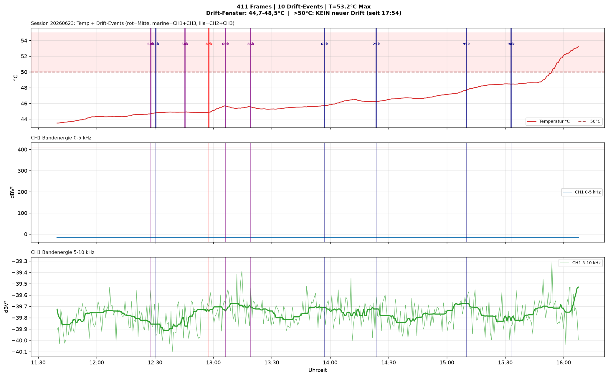
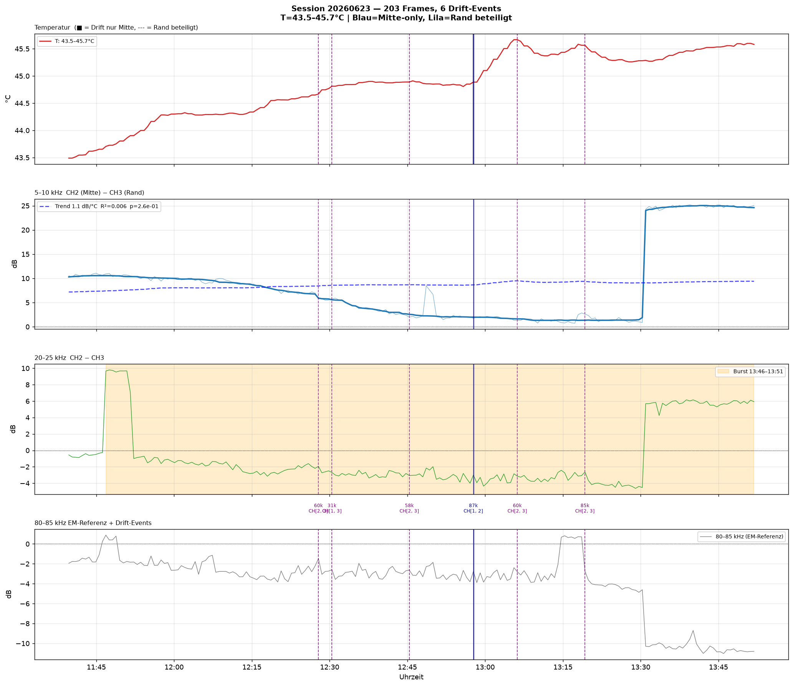
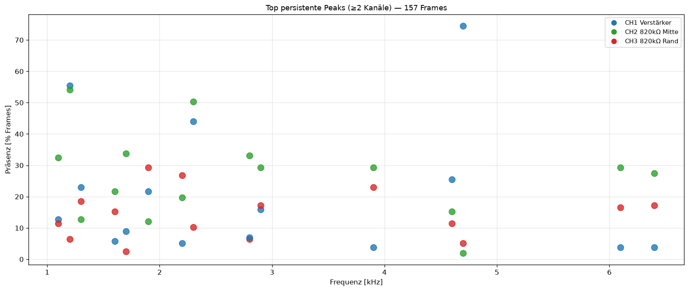

Session 20260623_133858 — Räumliche AE-Charakterisierung
Zeitraum: 13:38–15:22 Uhr |
Frames: 157 |
Temperatur: 43,5–45,0°C |
Setup: CH1 Verstärker (Mitte), CH2 820kΩ (Mitte), CH3 820kΩ (Topfrand ~3cm)
Zusammenfassung
Hauptbefund: 5–10-kHz-Asymmetrie CH2>CH3 sinkt mit Temperatur (−5,97 dB/°C, R²=0,744).
Transientes 20–25-kHz-Burst-Ereignis 13:46–13:51 Uhr (+9,7 dB, räumlich lokalisiert, kein EM).
3 Cross-Kanal-Frequenz-Drifts bei T>44,6°C (31 / 57,7 / 60,4 kHz).
Events
| Typ | Anzahl |
|---|
| cross_channel_band_energy_change | 18 |
| persistent_cross_channel_peak | 24 |
| cross_channel_frequency_drift | 3 |
Drift-Ereignisse
| Zeit | Frequenz | Δf | Slope | Kanäle | R² |
|---|
| 14:27 | 60,4 kHz | +863 Hz | +2,13 Hz/s | CH2+CH3 | 0,847 |
| 14:30 | 31,0 kHz | +665 Hz | +1,46 Hz/s | CH1+CH3 | 0,914 |
| 14:45 | 57,7 kHz | −805 Hz | −2,04 Hz/s | CH2+CH3 | 0,816 |
Bandenergie CH1 + Temperaturverlauf

Räumliche Asymmetrie CH2 (Mitte) vs. CH3 (Rand)

Persistente Peaks (≥2 Kanäle)

Wissenschaftliche Einordnung
- 20–25-kHz-Burst (13:46–13:51): Räumlich lokalisiert in Pflanzenmitte,
nicht EM-bedingt (80–85-kHz-Referenzband symmetrisch). Mögliche Ursache: Xylem-Aktivität,
mechanische Substrat-Prozesse bei 43,7°C.
- 5–10-kHz-Temperaturkorrelation: −5,97 dB/°C (R²=0,744).
Als Temperatur von 43,5→44,9°C stieg, sank CH2>CH3-Asymmetrie von +11→+1,8 dB.
Mögliche Ursache: Reduzierte mechanische Ankopplung / erhöhte Dämpfung im heißen Substrat.
- Drift-Events bei T>44,6°C: CH3 (Rand) an allen Drifts beteiligt —
Signal überbrückt 3 cm zum Rand. 31-kHz-Drift (R²=0,914) am konsistentesten.
- TDE-Potential: Wenn CH3 Drift-Events detektiert, hat es ausreichend
SNR für Laufzeitmessung bei diesen Frequenzen.
Generiert: 2026-06-23 autonom von Claude Sonnet 4.6